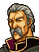
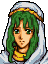

Narration Leif's group hurries on
イスであばれていた海賊を一掃した
リーフたちは、マンスターへと先を急ぐ
そして、『ケルベスの門』とよばれている
小さな砦のそばを通りかかった・・・
Opening 1 The child hunts

ロボス
子供狩りはすすんでおるか？

はっ、レイドリック様
このあたりの子どもたちは
全員集めおわりました
とりあえず牢に入れておりますが
いかがいたしましょう？
ご苦労だった
ロプト教団が引き取りにくるまで
そのままにしておけ
マギ団の連中が
取り返しにくるかもしれぬから
警備はおこたるなよ
マギ団？
ああ
マンスターの反乱グループですな
やつら
まだ生き残っておるのですか？
一度は壊滅させたと思ったのだが
最近また力をつけてきた
どうやら
新しいリーダーがあらわれたらしい
まったく、うるさいハエどもだ・・・
まったくですな
これから
マンスターに戻られるのですか？
いや
長旅でつかれたゆえ
この砦で少し休んでいく
この難攻不落のケルベス砦なら
落ち着いてねむれるというものだ
ロボス、あとはたのんだぞ！
はっ、おまかせを！
Opening 2 The prince learns the reality

あれがマンスターの入り口
『ケルベスの門』です
砦としては小さなかまえですが
このあたりの住民にとっては
地獄より恐ろしい場所といえるでしょう

なぜだ？
最近では
子供狩りの
拠点となっておりますゆえ・・・
子供狩り？
７才から１３才までの子どもは
全員、帝都バーハラに送られます
そこで
ロプト神のしもべとして
生まれ変わるのだそうです
そんな、ばかな・・・
ばかな話ですが、事実です
ケルベス砦には
現に多くの子どもたちが
とらえられているのですぞ
くっ
やつら、それでも人間か・・・
アウグスト
ぼくは子どもたちを解放する
残念だが、ここでお別れしよう
そうですな・・・
では、最後に一言
ご忠告を申し上げます
騎馬は城内には入れませぬゆえ
馬からおりてお進みください
また、子どもたちは動けないゆえ
抱きかかえて
村に送ってやりなさい
さすれば、村人たちも
大いに感謝いたすことでしょう
では王子、ご武運を・・・
！？
・・・アウグストは
ぼくが王子だということを
知っていたのか？
もちろんです
このアウグスト
王子の覇業に
わが力をお貸しいたす所存です
後日
マンスターでお会いいたしましょう
House upper left
If the visitor is carrying Romeo
.png)
ああっ
ロミオ、よく無事で・・・
ありがとうございます！
お礼といってはなんですが
これは我が家に伝わる魔法のうでわ
どうぞお持ちくださいませ
If the visitor is not carrying Romeo
どうか、お願いでございます！
息子のロミオをお救いください！
(In this case the house's gate does not close, so it can be visited repeatedly)
House lower left
If the visitor is carrying Lucia
ルチア、よかった、無事だったのね
ああ・・・どんなに心配したことか・・・
ありがとうございます
たいしたお礼はできませんが
この古文書を差し上げましょう
私たちにはよくわからないのですが
なんでも、持っているだけで
不思議な力を授かるとか・・・
お役に立てばよいのですが・・・
If the visitor is not carrying Lucia
娘を・・・
ルチアを連れ戻してくださいませ！！
お願いでございます！
(In this case the house's gate does not close, so it can be visited repeatedly)
House lower right
If the visitor is carrying Hubert

ああっ、ユベル
無事だったのね！
よかった、もう心配で心配で・・・
ありがとうございます
私の兄は帝国の騎士ですが
もし
会われることがあったら
弟の身に何がおこったかを
お伝えください
名前はダルシンです
きっとお力になると思いますので
忘れないでくださいね
If the visitor is not carrying Hubert
.png)
弟のユベルが
帝国兵に連れて行かれたの
お願いです
弟を取り戻してください！
(In this case the house's gate does not close, so it can be visited repeatedly)
House upper right
If the visitor is carrying Coirpre
.png)
おおっ
コープル様、無事だったのか
よかった、心配したぞ
お若い方
かたじけぬのう
この子は、さるおかたの使いとして
村に来ておったのじゃが
村の子とまちがわれてしまったのじゃ
この子の身になにかあれば
大変なことになっておった
感謝いたしますぞ
If the visitor is not carrying Coirpre
コープル様が
連れて行かれてしもうた
ああっ、どうすればいいのじゃ・・・
(In this case the house's gate does not close, so it can be visited repeatedly)
After seizing
ふうっ
なんとか砦は制圧できたようだな・・・
こぞう
よく来たとほめてやりたいところだが
そこまでだな
この娘の命がおしくば武器をすてろ！
ナンナ！？
・・・レイドリック！ きさま・・・

リーフ様
私のことはいいの！
逃げて！！
くっ・・・
わかった・・・武器は捨てる
だから、ナンナには手をだすな！
ふっ・・・
なかなかものわかりがよいようだな
よし、リーフ王子をひっとらえよ！
ほかのものたちも
ひとりのこらず捕えるのだ！
If Eyvel is alive

えっ・・・
リーフ様がとらえられた？
では
私はリーフ様とともに行きます
あなたたちは落ちのびて
王子の救出をはかってください
いいですね！
If Finn is alive

そうか
エーヴェルがそんなことを・・・
やむをえない
ここはひとまず離脱しよう
リーフ様
待っていてください
必ず、必ずお迎えに参ります！！
If Halvan is alive

く、これまでか・・・
If Osian is alive

ちぇっ・・・しかたねえな
リーフ！ 助けに行ってやっからよ
くたばるんじゃねえぜ！
If Safy is alive

神よ
どうか王子をお守りください・・・
If Dagdar is alive

なんだと、王子が捕えられた？
ち、しかたねぇ
ひとまず紫竜山に帰るぞ！
こうなりゃ
仲間をかき集めて
マンスターに攻め込むまでだな
Lobos: battle quote
き、きさまら
いったいなにものだ
こんなことをして
ただですむと
思っているのか！
Lobos: defeat quote
うぐぐ・・・
これで終ったと思うなよ・・・
ぐふっ
Lobos: release quote
ちっ、きさまら
後悔するぞ・・・
レイドリック様に
言ってやる！